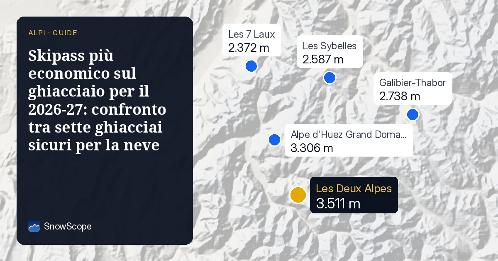

Skipass più economico sul ghiacciaio per il 2026-27: confronto tra sette ghiacciai sicuri per la neve
A novembre e nei primi giorni di dicembre, un ghiacciaio è il posto più sicuro dove spendere i soldi di uno skipass. Dei sette ghiacciai confrontati, Les 2 Alpes e il Mölltaler Gletscher sono i più economici con 68 e 69 EUR per un giorno adulto, e quello del Mölltal ha anche l'innevamento medio di dicembre più profondo del gruppo: 118 cm a quota intermedia.
Le previsioni neve in tempo reale per Les Deux Alpes nell'app SnowScopeAltezza neve, allerte powder e mappa 3D, gratis.
Sette ghiacciai, da 68 EUR a 86 CHF
Les 2 Alpes vende il suo skipass giornaliero Grand Domaine a 68 EUR con il biglietto flessibile Freedom, e a soli 42 EUR nel weekend di apertura, il 28 e 29 novembre 2026. Il Mölltaler Gletscher in Carinzia segue con 69 EUR in bassa stagione, anche se questa tariffa viene dal suo ultimo listino pubblicato, quello del 2025-26, quindi è bene verificarla prima di partire.
Lo Zugspitze, l'unico comprensorio sciistico su ghiacciaio della Germania, costa 70,5 EUR online. Il Kitzsteinhorn sopra Kaprun applica 74 EUR in prestagione e 82 EUR in stagione piena. Il Pitztal mantiene un unico prezzo per tutto l'inverno, 77 EUR, e lo stesso vale per Hintertux a 82 EUR. Saas-Fee in Svizzera chiude la classifica a 86 CHF.
Quali ghiacciai hanno davvero la neve
Non tutti i comprensori su ghiacciaio sono alti ovunque. Abbiamo analizzato la quota intermedia nella nostra storia nivologica di 46 inverni passati. Il Mölltaler Gletscher, a 2.593 m, ha di solito 118 cm a dicembre e 23 settimane a inverno con almeno 50 cm in 9 inverni su 10. Il Pitztal, a 2.576 m, ha 82 cm e 22 settimane di questo tipo. Saas-Fee ha 68 cm e 21 settimane, Les 2 Alpes 77 cm e 20 settimane.
Hintertux e lo Zugspitze raggiungono entrambi 15 settimane snow-sure, con 53 cm e 56 cm in un dicembre tipico. Il Kitzsteinhorn è la sorpresa: la sua quota intermedia è più bassa, a 1.894 m, e trattiene 41 cm a dicembre con 11 settimane snow-sure. Il ghiacciaio in cima è affidabile, ma la lunga pista verso Kaprun spesso non lo è a inizio inverno.
Il miglior rapporto qualità-prezzo per ogni viaggio
Per il prezzo più basso con più neve, il Mölltaler Gletscher vince in Austria: 69 EUR e l'innevamento più profondo dei sette. È un comprensorio più piccolo con 21 km di piste, quindi uno o due giorni bastano. Il Pitztal è la scelta in altitudine per gli sciatori forti, con impianti che salgono fino a 3.424 m e lo stesso prezzo ogni giorno.
In Francia, Les 2 Alpes è difficile da battere a fine novembre: 42 EUR nel weekend di apertura, impianti fino a 3.511 m e 108 km di piste una volta aperto tutto il comprensorio. Lo Zugspitze ha senso da Monaco per una gita in giornata, e Saas-Fee è la scelta giusta se si vuole la neve svizzera e si può convivere con il franco.
Sci sul ghiacciaio a inizio inverno: cosa aspettarsi
A novembre, la maggior parte dei ghiacciai apre solo poche piste in cima, e di solito si torna a valle con un impianto. La neve è spesso dura al mattino e le giornate sono corte, quindi conviene partire presto. Il vento forte può chiudere gli impianti più alti, e il freddo a 3.000 m è molto più intenso che a valle.
Fuori dalle piste segnalate, i ghiacciai hanno crepacci nascosti sotto la neve fresca. Non uscire mai dalla pista senza una guida e controlla il bollettino valanghe della regione prima di partire.
Prenotare il soggiorno insieme allo skipass
Un weekend di prestagione costa meno se si dorme a valle: Flattach sotto il Mölltaler Gletscher, i paesi del Pitztal ai piedi del ghiacciaio, o la valle della Tux. La mappa in questo articolo mostra soggiorni sotto i 130 EUR a notte vicino ai quattro ghiacciai che consigliamo, per il weekend dal 27 al 29 novembre 2026.
I prezzi sulla mappa cambiano in base alle date scelte, e i prezzi degli skipass possono variare durante l'inverno. Acquista sul sito ufficiale di ogni ghiacciaio.
Consigli per sciatori
- Il più economico e con più neve: Mölltaler Gletscher, 69 EUR e 118 cm in un dicembre tipico a 2.593 m.
- Offerta del weekend di apertura: Les 2 Alpes a 42 EUR il 28 e 29 novembre 2026.
- Kitzsteinhorn: ottimo in cima, scarso a valle a inizio inverno.
- Non uscire mai dalle piste segnalate su un ghiacciaio senza una guida.
Altre mappe (siti esterni)
Riferimenti e crediti
- Les 2 Alpes, official ski pass shop, prices 2026-27 www.skipass-2alpes.com/en/pricing
- Les 2 Alpes, official ski pass shop, opening weekend offer www.skipass-2alpes.com/fr/forfaits/ski
- Mölltaler Gletscher: official lift-pass prices (2025-26), checked 13 November 2026 www.moelltaler-gletscher.at/en/price-list/winter/moelltaler-gletscher
- Zugspitze: official lift-pass prices (2026-27), checked 13 November 2026 zugspitze.de/prices
- Kitzsteinhorn (Kaprun): official lift-pass prices (2026-27), checked 13 November 2026 www.kitzsteinhorn.at/en/tickets-prices/ski-board
- Pitztaler Gletscher: official lift-pass prices (2026-27), checked 13 November 2026 www.pitztaler-gletscher.at/media/pt_price_winter_26_27.pdf
- Hintertuxer Gletscher: official lift-pass prices (2026-27), checked 13 November 2026 www.hintertuxergletscher.at/en/tickets-rates/tickets-rates/rates-hintertux-glacier/
- Saas-Fee/Saastal, official ski pass prices 2026-27 www.saas-fee.ch/en/winter-in-the-saas-valley/ski-pass-prices/saas-fee
Su questi numeri
Numeri della neve: storico neve SnowScope, 46 inverni passati (1980-81 - 2025-26) a tre quote della località, un modello del passato corretto per la quota (una stima per un'area, non i bollettini della località). Impianti, piste e accesso: le fonti qui sotto, verificate alla data indicata.
Cita questo articolo
Per ricerca, didattica o stampa: numeri e grafici sono liberamente riutilizzabili con licenza CC BY 4.0 citando così.
SnowScope (2026), Skipass più economico sul ghiacciaio per il 2026-27: confronto tra sette ghiacciai sicuri per la neve, https://snowscope.app/blog/it/2026/11/cheapest-glacier-ski-pass-2026-27-snow-sure.html, consultato il 2026-11-19
SnowScope (Atlas Labs). (2026, November 19). Skipass più economico sul ghiacciaio per il 2026-27: confronto tra sette ghiacciai sicuri per la neve. SnowScope snow reports. https://snowscope.app/blog/it/2026/11/cheapest-glacier-ski-pass-2026-27-snow-sure.html
BibTeX
@misc{snowscope2026cheapestglacierskipass20,
author = {{SnowScope (Atlas Labs)}},
title = {Skipass più economico sul ghiacciaio per il 2026-27: confronto tra sette ghiacciai sicuri per la neve},
year = {2026},
month = nov,
howpublished = {\url{https://snowscope.app/blog/it/2026/11/cheapest-glacier-ski-pass-2026-27-snow-sure.html}},
note = {Published 2026-11-19 14:07 UTC; accessed 2026-11-19}
}· CC BY 4.0 · Metodi, dati e strumenti →
Les Deux Alpes: neve e temperatura per quota, quest'inverno vs lo scorso (strumenti) →
Segui Les Deux Alpes
Gratis: un messaggio quando arriva la neve e il meteo ogni mattina.